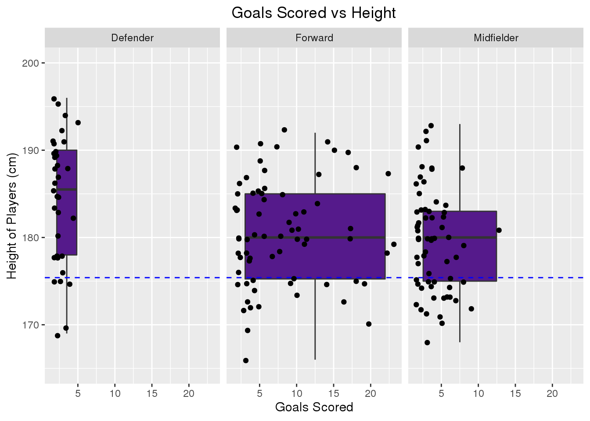

library(here)
library(ggplot2)
library(tidyverse)
library(readxl)
library(tinytex)
library(fivethirtyeight)
knitr::opts_chunk$set(echo = FALSE, tidy = TRUE)
epl1 <- read.csv(file = here::here("epl_data", "epl2020.csv"))
epl2 <- read.csv(file = here::here("epl_data", "EPL_19_20_GW_Timeseries.csv"))
epl3 <- read.csv(file = here::here("epl_data", "epl_players_stats.csv"))
epl4 <- read.csv(file = here::here("epl_data", "players_1920_fin.csv"))For this project, I am examining the English Premier League statistics by players stats, like height/age compared to their respective position. For example, in the datasets “epl_players_stats.csv” and “players_1920_fin.csv” from FiveThirtyEight, the file goes into full detail about players like height, position, goals per game, goals given up, age, ect, so I will be examining if a player if more likely to succeed in this league based on their height or age. The “players_1920_fin.csv”" there were 22,502 observations and 35 Variables, and “epl_players_stats.csv” has 522 observations and 41 variables. The variable codes is a factor with multiple levels explaing what teams each player plays for and their statistics for the 19/20 season.
The other two datasets “EPL_19_20_GW_Timeseries.csv” and “epl2020.csv” go into detail for the 19/20 statitics for each team in the English Premier League. In these data sets, we can find the results week by week of each team in the EPL and variable like win’s, loss’s, ties, points gained, goals given up, goals scored, ect.. The “EPL_19_20_GW_Timeseries.csv” has 1,048,575 observations and 77 variable and the “epl2020.csv” data set consits of 576 observations and 45 variables. These files have many levels going into full detail week by week, so i will have many outcomes to analyze.
*Question 1: First, do soccer players score more goals based on their height? I will analyze each players statistics for the 19/20 season based off their heights. Go into detail about if tall players score more goals than short players or vise versa. The measurement will be based off the overall median height of every player in the league. To test this, I will be putting the data organized in a data visualization like a scatter plot.
## id name nationality team team_id age height weight
## 1 816 Kevin De Bruyne be Man City 875 29 181 68
## 2 622 Bruno Fernandes pt Man Utd 314 26 179 69
## 3 812 Ricardo Pereira pt Leicester 652 26 175 70
## 4 287 Adama Traoré es Wolves 518 24 178 72
## 5 158 Riyad Mahrez dz Man City 875 29 179 67
## 6 576 Sadio Mané sn Liverpool 339 28 175 69
## position roles games exit_on_sub minutes rating_m goals assists
## 1 Midfielder M_C,M_L,M_R,FW 35 3 2800 7.97 13 20
## 2 Midfielder M_C,M_L,M_R 14 0 1223 7.73 8 7
## 3 Defender D_L,D_R,M_R 28 0 2520 7.50 3 2
## 4 Forward M_L,M_R,FW 37 10 2608 7.49 4 9
## 5 Forward AM_C,AM_L,AM_R 33 12 1942 7.48 11 9
## 6 Forward AM_C,AM_L,AM_R,FW 35 4 2756 7.45 18 7
## yel_cards red_cards shots_m aerials_won_m motm successful_passes_pt
## 1 3 0 2.8 0.5 10 81.5
## 2 2 0 3.1 0.2 3 75.7
## 3 1 0 0.6 1.5 2 78.9
## 4 1 0 1.2 1.2 6 74.4
## 5 0 0 2.2 0.3 3 90.1
## 6 3 0 2.2 1.2 7 81.6
## key_passes_m dribbles_won_m fouls_given_m offside_m dispossessed_m passes_m
## 1 3.9 1.4 0.8 0.1 0.9 54.5
## 2 2.1 1.1 1.0 0.1 0.9 55.5
## 3 1.0 2.1 1.3 0.0 1.1 56.1
## 4 1.3 5.0 2.1 0.2 1.8 19.2
## 5 1.8 1.6 0.9 0.4 1.0 33.2
## 6 1.7 2.0 1.5 0.4 1.6 31.5
## accurate_crosses_m accurate_long_passes_m accurate_through_passes_m tackles_m
## 1 2.1 3.5 0.4 1.3
## 2 1.0 3.3 0.3 1.6
## 3 0.3 2.1 0.1 4.2
## 4 1.2 0.2 0.1 0.9
## 5 0.6 1.7 0.2 0.8
## 6 0.3 1.0 0.1 1.3
## interceptions_m fouls_m clearances_m dribbled_past_m owm_goals
## 1 0.5 0.7 0.7 1.4 0
## 2 0.8 0.6 1.0 2.4 0
## 3 1.8 1.6 2.6 1.9 0
## 4 0.4 1.1 0.4 0.4 0
## 5 0.5 0.4 0.2 0.8 0
## 6 0.4 1.3 0.2 0.8 0
## gk_in_goal_area_saves_m gk_inside_box_saves_m gk_outside_box_saves_m
## 1 0 0 0
## 2 0 0 0
## 3 0 0 0
## 4 0 0 0
## 5 0 0 0
## 6 0 0 0
## gk_saves_m
## 1 0
## 2 0
## 3 0
## 4 0
## 5 0
## 6 0## avg_height
## 1 175.3985## Warning: Continuous x aesthetic -- did you forget aes(group=...)?## Warning: Removed 1 rows containing missing values (stat_boxplot).## Warning: Removed 1 rows containing missing values (geom_point). *Question 2: Second, do teams tend to preform better with older, experienced players or young, talented players. Getting the average age of the players for each team and basing that with their results. Respectively, comparing if they score more goals, prevent more goals, and their wins, then plotting this into a bar chart.
## Teams GW1_Points GW1_Standing GW2_Points GW2_Standing GW3_Points GW3_Standing
## 1 MCI 3 1 4 3 7 2
## 2 MUN 3 2 4 4 4 5
## 3 LIV 3 3 6 1 9 1
## 4 BHA 3 4 4 5 4 8
## 5 BUR 3 5 3 10 4 6
## 6 TOT 3 6 4 6 4 7
## GW4_Points GW4_Standing GW5_Points GW5_Standing GW6_Points GW6_Standing
## 1 10 2 10 2 13 2
## 2 5 8 8 4 8 8
## 3 12 1 15 1 18 1
## 4 4 16 5 16 6 15
## 5 4 12 5 14 8 9
## 6 5 9 8 3 8 7
## GW7_Points GW7_Standing GW8_Points GW8_Standing GW9_Points GW9_Standing
## 1 16 2 16 2 19 2
## 2 9 10 9 12 10 14
## 3 21 1 24 1 25 1
## 4 6 16 9 14 9 16
## 5 9 11 12 7 12 8
## 6 11 6 11 9 12 7
## GW10_Points GW10_Standing GW11_Points GW11_Standing GW12_Points GW12_Standing
## 1 22 2 25 2 25 4
## 2 13 7 13 10 16 7
## 3 28 1 31 1 34 1
## 4 12 14 15 8 15 11
## 5 12 13 12 14 15 10
## 6 12 11 13 11 14 14
## GW13_Points GW13_Standing GW14_Points GW14_Standing GW15_Points
## 1 28 3 29 3 32
## 2 17 9 18 9 21
## 3 37 1 40 1 43
## 4 15 12 15 16 18
## 5 18 7 18 10 18
## 6 17 10 20 5 20
## GW15_Standings GW16_Points GW16_Standing GW17_Points GW17_Standing
## 1 3 32 3 35 3
## 2 6 24 5 25 6
## 3 1 46 1 49 1
## 4 13 19 12 20 13
## 5 12 18 13 21 12
## 6 8 23 7 26 5
## GW18_Points GW18_Standing GW19_Points GW19_Standing GW20_Points GW20_Standing
## 1 38 3 38 3 41 3
## 2 25 8 28 8 31 5
## 3 49 1 52 1 55 1
## 4 20 13 20 15 23 14
## 5 24 10 24 12 24 13
## 6 26 7 29 6 30 6
## GW21_Points GW21_Standing GW22_Points GW22_Standing GW23_Points GW23_Standing
## 1 44 3 47 2 48 2
## 2 31 5 34 5 34 5
## 3 58 1 61 1 64 1
## 4 24 14 24 14 25 15
## 5 24 15 24 15 27 14
## 6 30 6 30 8 31 8
## GW24_Points GW24_Standing GW25_Points GW25_Standing GW26_Points GW26_Standing
## 1 51 2 51 2 54 2
## 2 34 5 35 7 38 7
## 3 70 1 73 1 76 1
## 4 25 15 26 15 27 15
## 5 30 13 31 11 34 11
## 6 34 6 37 5 40 5
## GW27_Points GW27_Standing GW28_Points GW28_Standing GW29_Points GW29_Standing
## 1 57 2 57 2 57 2
## 2 41 5 42 5 45 5
## 3 79 1 79 1 82 1
## 4 28 15 28 15 29 15
## 5 37 10 38 9 39 10
## 6 40 6 40 7 41 8
## GW30_Points GW30_Standing GW31_Points GW31_Standing GW32_Points GW32_Standing
## 1 63 2 63 2 66 2
## 2 46 5 49 5 52 5
## 3 83 1 86 1 86 1
## 4 32 15 33 15 33 15
## 5 39 11 42 11 45 10
## 6 42 8 45 7 45 9
## GW33Points GW33_Standing GW34_Points GW34_Standing GW35_Points GW35_Standing
## 1 66 2 69 2 72 2
## 2 55 5 58 5 59 5
## 3 89 1 92 1 93 1
## 4 33 15 36 15 36 15
## 5 46 10 49 10 50 10
## 6 48 8 49 9 52 8
## GW36_Points GW36_Standing GW37_Points GW37_Standing GW38_Points GW38_Standing
## 1 75 2 78 2 81 2
## 2 62 5 63 3 66 3
## 3 93 1 96 1 99 1
## 4 37 16 38 16 41 15
## 5 51 10 54 9 54 10
## 6 55 7 58 7 59 6## Teams GW38_Points GW38_Standing
## 1 MCI 81 2
## 2 MUN 66 3
## 3 LIV 99 1
## 4 BHA 41 15
## 5 BUR 54 10
## 6 TOT 59 6
## 7 ARS 56 8
## 8 BOU 34 18
## 9 SHU 54 9
## 10 CRY 43 14
## 11 EVE 49 12
## 12 LEI 62 5
## 13 WOL 59 7
## 14 NEW 44 13
## 15 AVL 35 17
## 16 NOR 21 20
## 17 SOU 52 11
## 18 WAT 34 19
## 19 CHE 66 4
## 20 WHU 39 16## # A tibble: 20 x 2
## team avg_age
## <fct> <dbl>
## 1 Arsenal 25.9
## 2 Aston Villa 27.1
## 3 Bournemouth 25.9
## 4 Brighton 26.8
## 5 Burnley 28.6
## 6 Chelsea 25.3
## 7 Crystal Palace 28.6
## 8 Everton 26.4
## 9 Leicester 26.4
## 10 Liverpool 26.6
## 11 Man City 26.8
## 12 Man Utd 25.1
## 13 Newcastle 27.0
## 14 Norwich 26.4
## 15 Sheff Utd 28.1
## 16 Southampton 25.5
## 17 Tottenham 25.7
## 18 Watford 28.3
## 19 West Ham 28.1
## 20 Wolves 25.4## Teams GW38_Points GW38_Standing
## 1 MCI 81 2
## 2 MUN 66 3
## 3 LIV 99 1
## 4 BHA 41 15
## 5 BUR 54 10
## 6 TOT 59 6
## 7 ARS 56 8
## 8 BOU 34 18
## 9 SHU 54 9
## 10 CRY 43 14
## 11 EVE 49 12
## 12 LEI 62 5
## 13 WOL 59 7
## 14 NEW 44 13
## 15 AVL 35 17
## 16 NOR 21 20
## 17 SOU 52 11
## 18 WAT 34 19
## 19 CHE 66 4
## 20 WHU 39 16*Question 3: Third, overall, do teams that spend more money correlate to their performance. Do team that spend more money obtaining and paying more players translate to more wins. I will be comparing the total amount spent by each team and comparing them in a bar chart.
*Question 4: Fourth, To be announced.